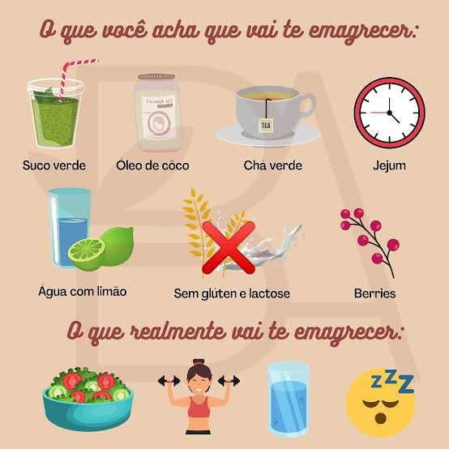

O profissional Nutricionista
Nutricionista é capacitado para desenvolver atividades em diversas áreas.
É preciso compreender que a educação física é uma diciplina obrigatória no curriculo escolare que apresenta caracteristicas próprias.
Nutrição Clínica: O termo educação fisíca presupoē a ideia de contole do corpo ai ainda, de controle do fisíco .
desde o século XVII, é uma ação que está intimamente relacionada a diciplina corporal: Escolher, comprar, estocar, cuidar da higiene e da preparação fos alimentos em cozinhas industriais.
Saúde Pública : Elaborar programas de merenda escolar e de suplementação alimentar em escolar, creches e centros de saúde.
Marketing : Organizar cozinhas experimentais, coordenar pesquisas de produtos, fazer testes de receitas e atender o consumidor.
Acessoria, auditoria e consultoria : Planejar cozinhas, treinar funcionários, montar dietas para esportistas ou regimes para especiais pacientes.
Ensino : Preparar cursos de educação alimentar para gripos específicos.
Pesquisa : Trabalhar em laboragórios de pesquisa alimentares, universidades e centros científicos, investigando os nutrientes as propriedades dos alimentos.
Nosso estabelecimento
Nosso estabelecimento está localizado no coração da cidade.
Beneficios
- Atendimento aos clientes
- Espepaço diferenciado
- Localização
- Profissionais qualificados
- Pontualidade
- Recuperação